01Value the claim
Use dividend discount, free-cash-flow, and relative valuation models.
How ownership becomes a financial strategy—and a market price
Use dividend discount, free-cash-flow, and relative valuation models.
Explain why a company goes public and how an IPO is priced.
Trace issuance through liquidity, leverage, EPS, and ROE.
Read stock-market mechanics, risk measures, and peer multiples.
Returns depend on dividends and price appreciation after all senior claims.
Usually limited voting rights, but priority over common dividends and liquidation value.
Name a recent IPO and the story investors were buying.
Was the company raising growth capital, creating liquidity, or both?
If you were a founder, when would public markets be worth the trade-offs?
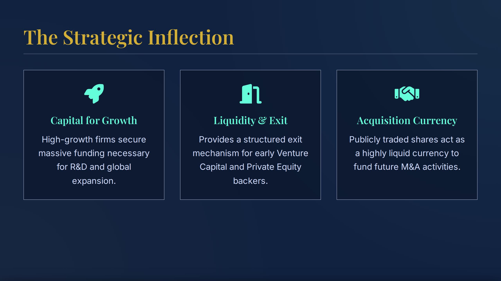
Choose the bank that structures, markets, and distributes the offering.
Disclose the business, risks, financials, and proposed use of proceeds.
Collect investor indications of interest during the roadshow.
Set the offer price using demand, valuation, and market conditions.
Allocate shares and transition to secondary-market price discovery.
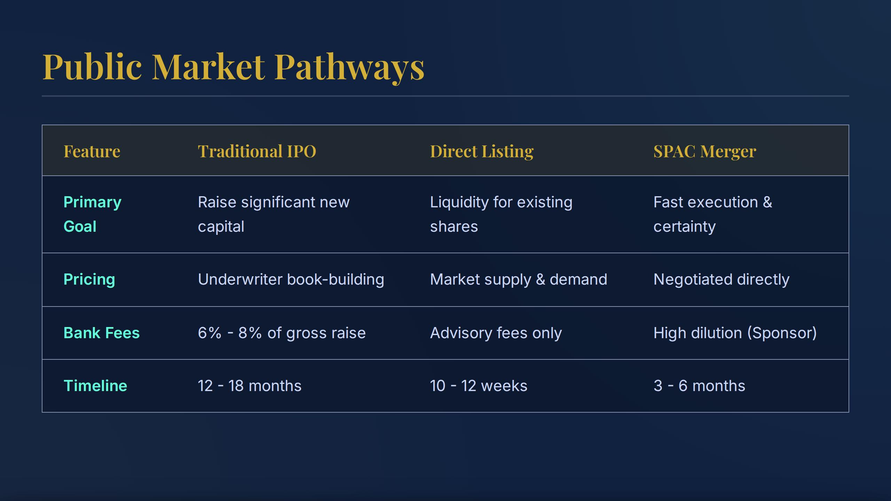
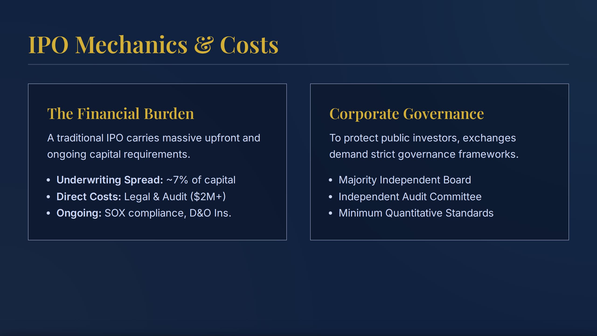
Sources: SpaceX roadshow announcement (June 4, 2026); Reuters (June 11, 2026); Axios (July 17, 2026).
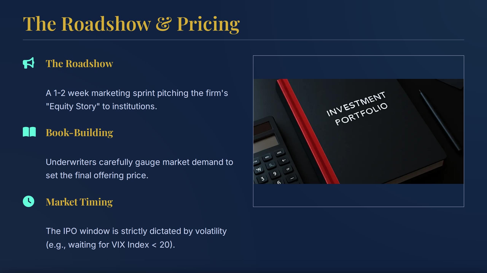
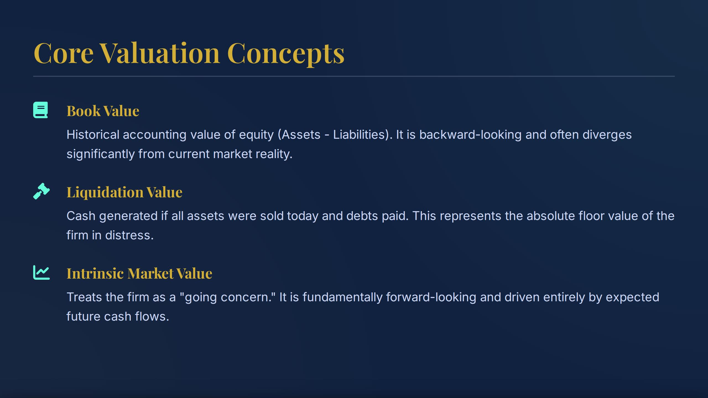
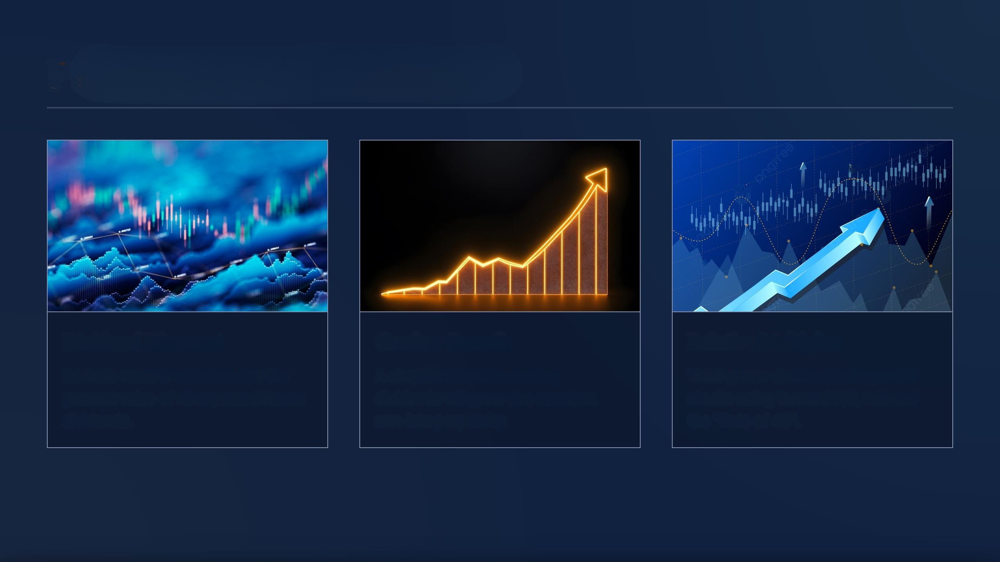
Discount each expected dividend to today.
Use when perpetual growth is sustainable and below the required return.
Use P/E, P/B, P/S, or EV/EBITDA with economically comparable firms.
P₀ = Σ Dₜ/(1+r)ᵗBest when dividends reflect distributable cash and the payout policy is stable.
P₀ = D₁/(r−g)Best for mature firms with a sustainable perpetual growth rate below the required return.
Equity value = PV(FCFE)Best when dividends do not mirror the cash available to shareholders.
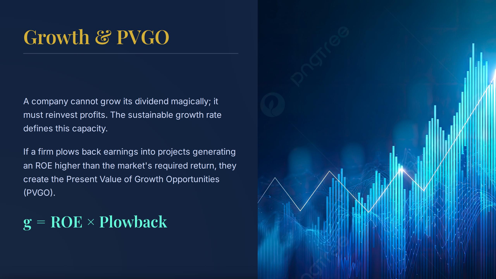
Fund growth, create an exit path, raise visibility, and use stock as acquisition currency.
Avoid recurring reporting costs, public scrutiny, quarterly pressure, and broad ownership dilution.
Issuance · trading · bid–ask mechanics
A company receives cash only when it issues securities. Later trades transfer ownership among investors.
New securities move to investors; cash moves to the corporation.
Liquidity and price discovery occur without new cash going to the issuer.
Exchanges bring orders together under shared rules.
Its iconic floor is now one part of a largely electronic market.
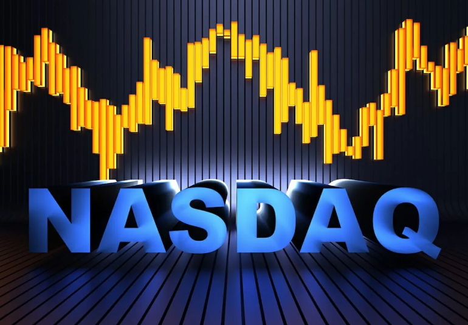
No physical trading floor is required for a market to provide liquidity and price discovery.
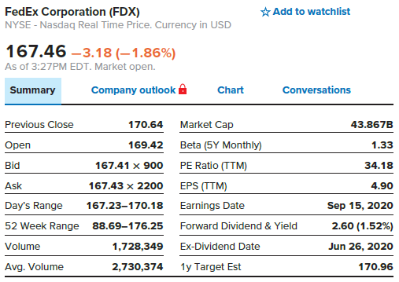
Coupons and principal are specified by the indenture; required yield drives price.
Dividends, repurchases, growth, and the resale price depend on business performance and policy.
FV = PV × (1 + g)tFuture value equals current value compounded at growth rate g for t periodsD₅ = $3.00 × (1.08)⁵D₅ = $3.00 × 1.4693$4.41Expected dividend in year 5P₀ = D₁ / (r − g)Current price equals next period dividend divided by required return minus perpetual growth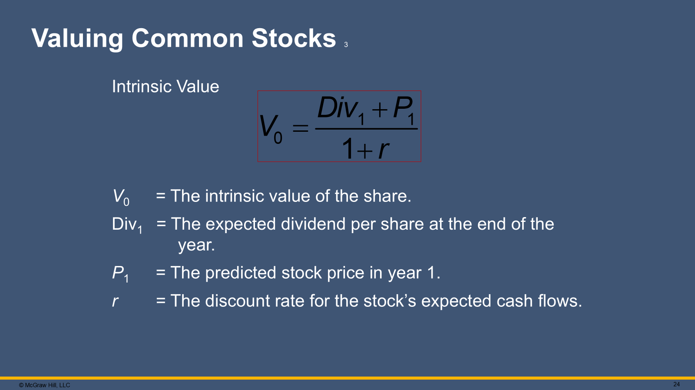
Cash received during the holding period
Price expected at the end of the period
Compensation for time and risk
V₀ = ($3 + $81) / 1.12 = $75.00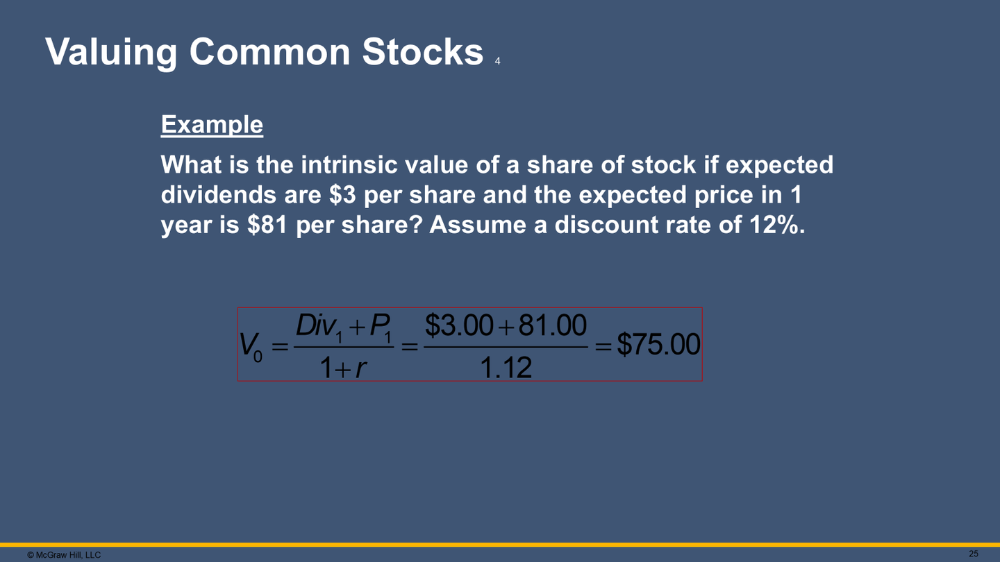
Required return = 12%
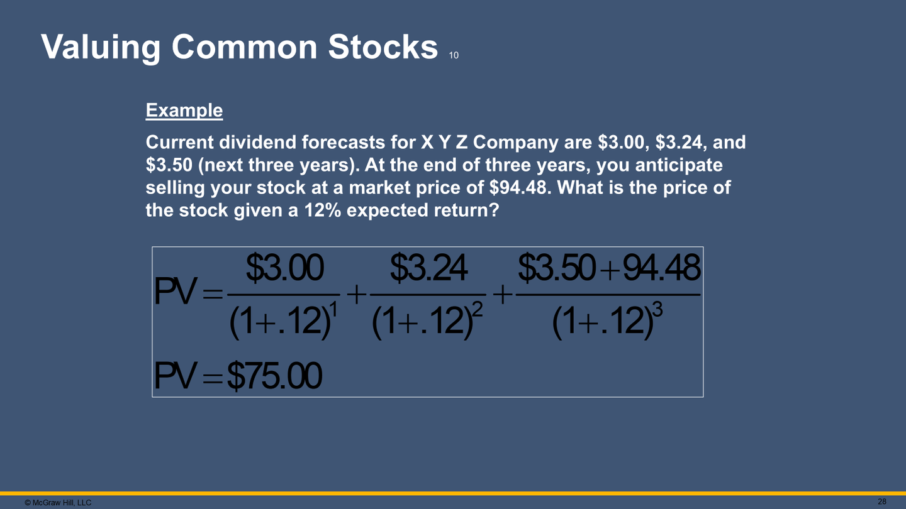
=SUM(F2:F5)| A | B | C | D | E | F | |
|---|---|---|---|---|---|---|
| 1 | Cash flow | Amount | Period | Discounting math | PV function | Present value |
| 2 | Dividend 1 | $3.00 | 1 | =B2/(1+$B$6)^C2 | =-PV($B$6,C2,0,B2) | $2.68 |
| 3 | Dividend 2 | $3.24 | 2 | =B3/(1+$B$6)^C3 | =-PV($B$6,C3,0,B3) | $2.58 |
| 4 | Dividend 3 | $3.50 | 3 | =B4/(1+$B$6)^C4 | =-PV($B$6,C4,0,B4) | $2.49 |
| 5 | Terminal price | $94.48 | 3 | =B5/(1+$B$6)^C5 | =-PV($B$6,C5,0,B5) | $67.25 |
| 6 | Required return | 12.00% | ||||
| 7 | Intrinsic value | =SUM(F2:F5) | $75.00 |
P₀ = $0.86 / (7.00% − 4.75%)P₀ = $0.86 / 2.25%$38.22Intrinsic value per shareWhy might a cash-rich company still go public?
Does a fall from 2.5× to 0.9× D/E automatically improve the stock?
Debt paydown versus R&D: which wins in year 1 and year 5?
If a stock jumps on day one, was the IPO price a success or a mistake?
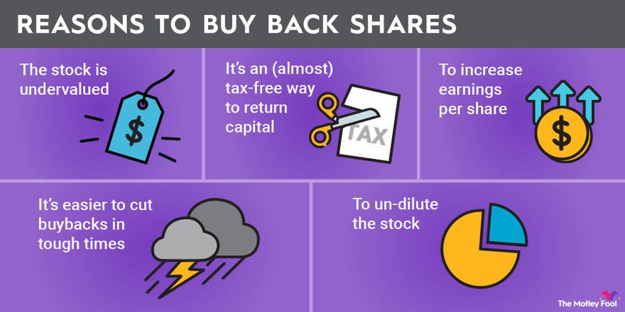
A buyback creates value only when the company pays a sensible price and still funds its best investments.
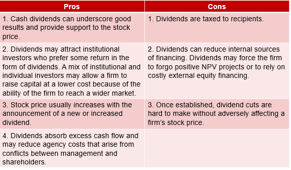
Broad distribution; cuts can be interpreted negatively.
Price-sensitive; can offset dilution or concentrate ownership.
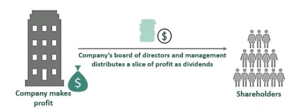
Board authorizes the dividend and announces the amount.
New buyers no longer receive the announced dividend.
Company confirms the shareholders entitled to payment.
Cash or additional shares reach eligible investors.
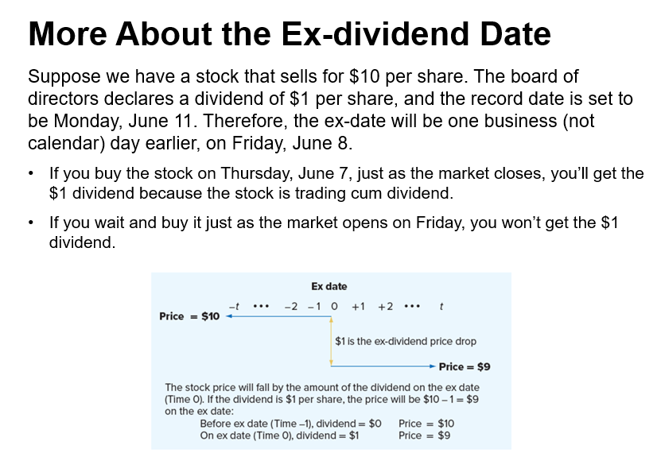
A bond indenture may limit dividends when leverage, coverage, or retained earnings fall outside agreed boundaries.
P₀ = $5.00 / 12%$41.67Pay out 100% of earnings.
g = 20% × 40% = 8%P₀ = $3.00 / (12% − 8%)$75.00Retain 40%; pay out 60%.
PVGO = $75.00 − $41.67 = $33.33When dividends are absent, forecast the economic driver that investors are pricing.
EPS = Net income / sharesMeasures earnings attributable to each common share.
Price = EPS × benchmark P/EApplies a peer or sector multiple to company earnings.
Price = $2.47 × 12.21$30.16Implied price per share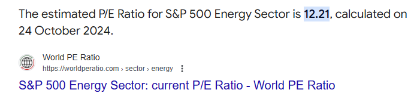
Price-to-sales asks how much equity value investors assign to each dollar of revenue.
P/S = Market capitalization / RevenuePrice to sales equals equity market capitalization divided by annual revenueHigh growth cannot compensate forever for weak margins or continual dilution.
P/S = $172M / $79M2.177×Equity value per dollar of annual revenueCompare with sector peers after checking margin, growth, and capital intensity.
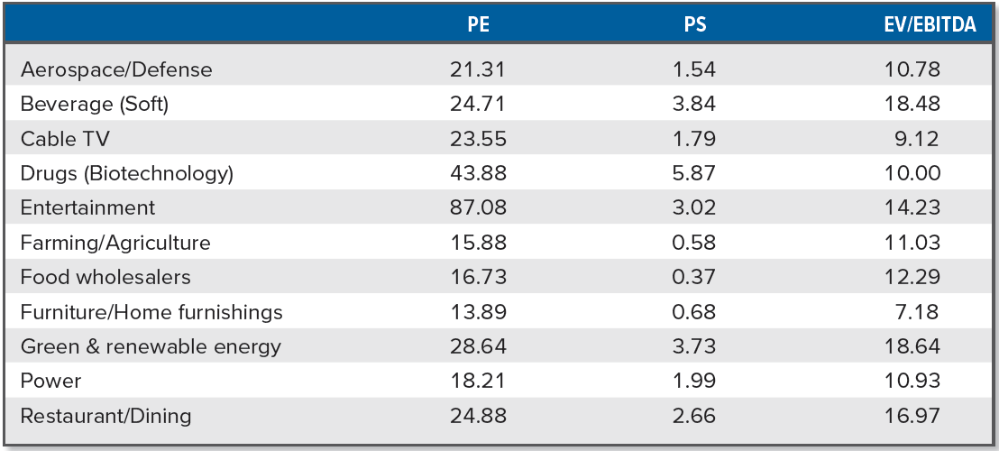
Beta enters CAPM as the exposure to market-wide risk—not as a complete description of company risk.
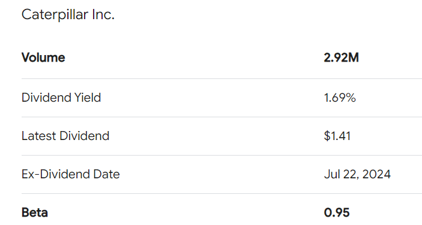
Usually no maturity and often limited voting rights.
Priority over common dividends; may be cumulative.
Ppreferred = D / rA 20% stock dividend adds one new share for every five owned.
A 3-for-1 split converts each old share into three shares.
Clarification: DRIP means dividend reinvestment plan; ADR normally means American depositary receipt.
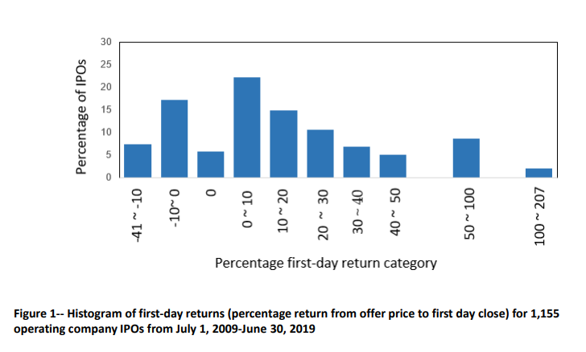
A first-day jump rewards allocated investors but leaves proceeds on the table for the issuer.